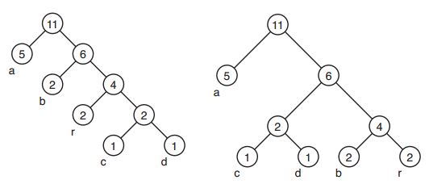

O algoritmo de Huffman é um método de codificação muito utilizado em compressão de textos. Dado um texto com N caracteres diferentes, o algoritmo de Huffman escolhe N códigos, um para cada caractere. O texto é comprimido utilizando esses códigos. Para escolher os códigos, o algoritmo constrói uma árvore binária com N nós folhas da seguinte forma (para N >= 2).
Para o texto "abracadabra", a árvore produzida pelo algoritmo pode parecer com a árvore da esquerda da figura abaixo, onde cada nó interno é rotulado com o peso de sua subárvore. Note que a árvore da direita na figura abaixo também pode ser produzida pelo algoritmo, assim como tantas outras, porque nos passos 3a e 3b o conjunto s pode conter várias árvores com o mesmo peso mínimo.

O código de cada caractere diferente do texto depende do caminho que existe, na árvore final, da raiz ao nó folha correspondente ao caractere. O tamanho do código é igual ao número de arestas nesse caminho (o qual coincide com o número de nós internos no caminho). Assumindo que à árvore da esquerda foi construída pelo algoritmo, o codigo de "r" tem tamanho 3, enquanto que o código de "d" tem tamanho 4.
Sua tarefa é: dados os tamanhos dos N códigos escolhidos pelo algoritmo de Huffman, encontre o tamanho mínimo (número total de caracteres) que o texto pode ter tal que os códigos escolhidos tenham os tamanhos formecidos.
A entrada contém vários casos de testes.
A primeira linha de cada caso de teste contém um inteiro N (2 <= N <= 50) que indica o número de caracteres diferentes que ocorrem no texto.
A segunda linha contém N inteiros Li que indicam o tamanho dos códigos escolhidos pelo algoritmo de Huffman para os N diferentes caracteres (1 <= Li <= 50, para i = 1, 2, ... ,N).
Você pode assumir que existe pelo menos uma árvore construída pelo algoritmo de Huffman que produz códigos com os tamanhos fornecidos.
Quando N=0 a entrada termina.
Entrada: 2 1 1 4 2 2 2 2 10 8 2 4 7 5 1 6 9 3 9 0 Saída: 2 4 89